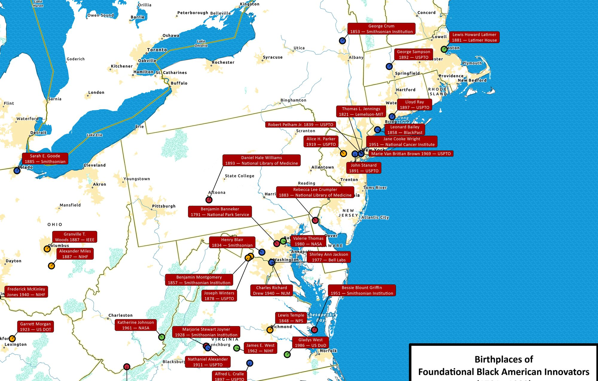

Birthplaces of Foundational Black American Innovators
FBA-2025-12 · Delivered

Overview
Final project for GIS 4504 Cartography. Identifies and maps the birthplaces of individuals whose innovations shaped American science, infrastructure, and daily life between 1755 and 1902. Each location is symbolized by contribution category to surface geographic patterns in foundational Black American innovation.
Processing
SoftwareArcGIS Pro
Methods
- Source data compiled from biographical and historical records
- Contribution categorized into 4 thematic classes
- Cartographic design: poster-format layout, contribution-coded markers, ocean masking for legibility
Deliverables
- Poster-format thematic map (PDF)